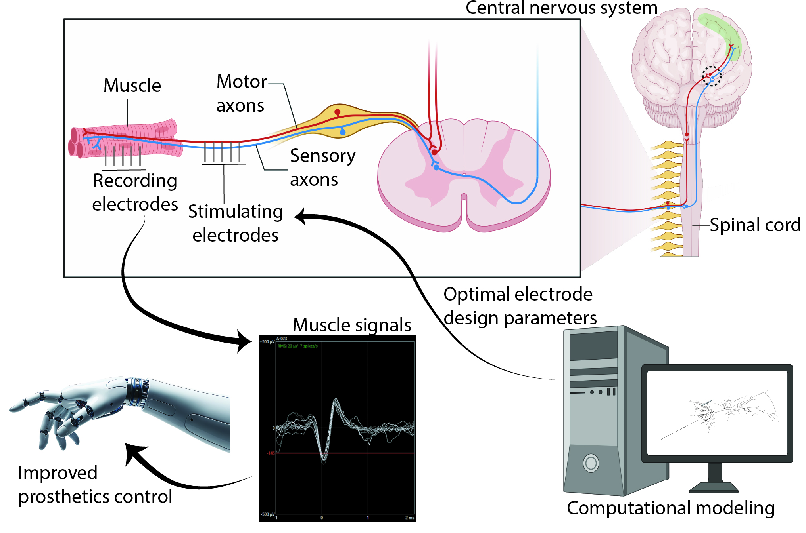

Peripheral Nerves: A New Paradigm in Brain-Machine Interfaces
Overview
Current brain-machine interfaces are functionally limited — restricted to low-bandwidth tasks such as cursor control — and rely on rigid intracortical electrodes that trigger inflammatory responses degrading signal quality over time. This project proposes a new paradigm: interfacing with the nervous system at the neuromuscular junction (NMJ), where motor neurons meet skeletal muscle. Targeting the peripheral nervous system rather than the brain offers a less invasive access point for motor control, with the potential for far greater spatial selectivity over individual motor units.

Research Aims
- Aim 1: Elucidate how electrode geometry, placement, and interface properties govern bioelectrical signal transduction at the NMJ — using an extended NEURON–COMSOL modelling framework for myotubes and myoblasts, validated with benchtop experiments on carbon fibre electrode arrays.
- Aim 2: Investigate scaffold architectures to establish physiologically relevant 3D NMJ platforms — evaluating aligned skeletal muscle constructs fabricated by melt electro-writing (MEW) and integrating them with motor neurons to form functional NMJs.
- Aim 3: Integrate optimised electrodes with 3D NMJ co-cultures to characterise neuron–muscle communication and evaluate closed-loop stimulation and recording strategies for prosthetic control.
Approach
The project combines computational and experimental methods. The existing NEURON–COMSOL digital twin framework — developed for cortical electrodes — will be extended to model myotube and myoblast geometries, with full impedance spectrum modelling replacing the single-frequency (1 kHz) measurements that currently dominate the field. Simulation outputs will guide the fabrication of carbon fibre electrode arrays on flexible polyimide PCBs, insulated with Parylene-C, and sized for selective motor unit targeting.
On the biological side, aligned 3D skeletal muscle constructs will be established using polycaprolactone MEW scaffolds and co-cultured with motor neurons to form functional NMJs. Electrophysiological readouts — extracellular action potentials, synaptic transmission fidelity, signal propagation, and impedance spectroscopy — will be collected via embedded carbon fibre electrodes in a custom compartmentalised device.
Expected Outcomes
- First integrated platform combining tissue-compliant carbon fibre electrodes with physiologically relevant 3D NMJ cultures.
- Validated electrode design rules for selective motor unit recording and stimulation in moving tissue.
- Quantitative benchmarks for synaptic transmission fidelity and signal stability during sustained NMJ interfacing.
- Open-source computational tools and open-access publications.
- Foundation for neuromuscular disease modelling in ALS and muscular dystrophy.
Collaborators
Prof. Robert Kapsa · A/Prof. David Garrett · Dr Arman Ahnood — RMIT University & St Vincent's Hospital · Prof. Steven Prawer & Dr Wei Tong — University of Melbourne / Carbon Cybernetics · Aikenhead Centre for Medical Discovery